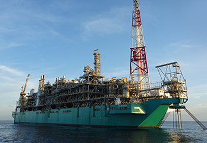
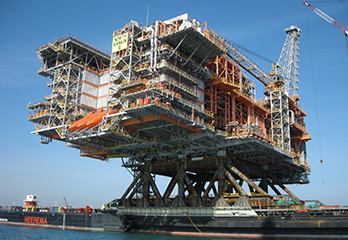
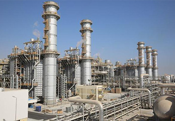
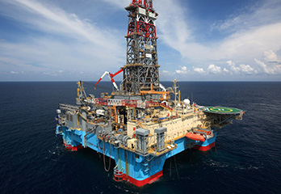
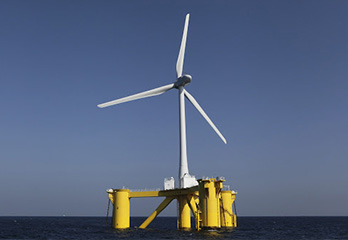

해양플랜트
시장점유율 1위를 유지하게하는
독보적인 건조기술
-

부유식 LNG 생산설비
LNG 수송선, 해양정제, LNG 생산에 필요한 경험과 기술을 접목하여
대우조선해양은 세계 최초의 FLNG를 성공적으로 Petronas사에 인도하였습니다.
야드 내에서의 완벽한 건조로 인해 해상 현지 도착 후 단 기간에 LNG 생산을 시작할 수 있었으며,
해양 LNG 시장 역사상 최초의 FLNG로 기록되었습니다. -

고정식 플랫폼
세계 최대 규모의 고정식 플랫폼을 설계부터 조달, 생산, 운송 및 설치까지
하나의 Turnkey 계약으로 수행하여 인도할 수 있는 기술력을 갖추고 있습니다.
기술 집약적이고 난이도 높은 상부구조물(Topside)과 부피 있는 하부구조물(Substructure)까지
모두 관장하며 세계 오일메이저 고객에게 One-Stop-Solution을 제공합니다. -

육상 모듈라 플랜트
해양생산설비의 기술력과 경험을 바탕으로 대우조선해양은 모듈라(Modular) 형태의
육상플랜트 공사에서도 그 경쟁력을 입증하고 있습니다.
현재 카자흐스탄으로 인도 될 24만톤 규모의 초대형 육상모듈라플랜트 공사를 수행하고 있으며,
이를 통해 꾸준한 경쟁력으로 육상플랜트 분야에서도 활약을 이어나가고 있습니다. -

시추설비
대우조선해양은 그 동안의 다양한 시추설비의 건조 실적을 바탕으로 친환경 기술과 고객 만족을
위한 기술을 적용 e-SMART 드릴쉽 디자인을 개발하였으며, 거친 북해에서
시추할 수 있는 반잠수식 원유시추선과 극지방에서도 시추할 수 있는 아틱드릴십까지,
축적된 시추선 설계 및 건조 능력을 보유하고 있습니다 -

부유식 발전설비
대우조선해양은 그 동안의 축적된 노하우와 기술력을 바탕으로 부유식 발전설비를 개발하여
에너지 사업에도 진출하고 있으며, 최근에는 환경 오염 이슈를 해결할 수 있는 LNG 청정연료를 사
용하여 해상에서 전기를 생산하여 육상으로 공급할 수 있는 해상 부유식 발전설비의
설계 건조 기술력을 보유하고 있습니다.